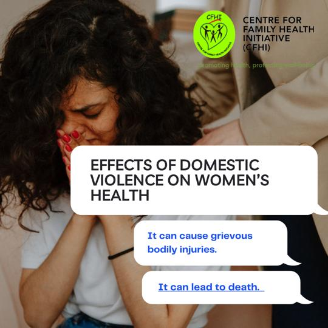

Effects of domestic violence on women
This violation of human rights can take many forms, including physical, sexual, and psychological abuse.
Women are more likely than men to be victims of domestic violence. Women who experience
intimate partner violence have more health needs and seek health services
more frequently than the general population, and their use of these
services rises as the frequency and severity of violence
increases. ~ Black MC
According to World Health Organization, the health
consequences of domestic violence on women can be immediate, acute,
long-lasting or chronic, and the common ones include;
Physical Effects
beabeabeabeavfesf Acute or immediate physical injuries, such as
bruises, lacerations, punctures, burns and bites, as well as fractures and
broken bones or teeth
More serious injuries, which can lead to disabilities
Long term health problems and poor health
status
Death
Additionally, women who experience domestic violence are more prone to
develop mental illnesses like post-traumatic stress disorder,
depression, anxiety, sleeping problems
, and occasionally even suicidal thoughts.
forward or report the abuse to the appropriate authorities for assistance.
Domestic violence is unacceptable. Say no to domestic violence. Speak
Wednesday is an initiative of us to address issues around gender-based violence
and gender bias. #SpeakWednesday #GBV #SayNoToDomesticViolence
#Women’srights #genderequality #genderbias

Effects of Domestic Violence
Domestic violence survivors can face ongoing and
challenging effects after enduring physical, mental, and emotional
abuse. It can take time for a survivor to adjust to living in a safe environment,
especially if a perpetrator was severely violent and/or committed the
actions over an extended period of time.
You have a right to be treated with
respect by your partner.
This handout includes more information on domestic
violence.
While addressing this pain can be overwhelming, the
healing process can help survivors develop inner strengths and lessen their fear of
safety for themselves and their families. On the journey to recovery,
survivors and those who support them should understand that healing takes
time. The effects of this trauma can vary widely person to person due to individuals’
responses to stress, age, and the frequency and severity of abuse.
What are common physical effects of domestic violence?
Bruises
Bruises on or around the eyes.
Sprained or broken wrists
Chronic fatigue
Shortness of breath
Muscle tension
Involuntary shaking
Changes in eating and
sleeping patterns
Sexual dysfunction
Menstrual cycle or fertility issues in women
What are common mental effects
of domestic violence?
Post-traumatic
stress disorder (PTSD), including flashbacks, nightmares, severe anxiety,
and uncontrollable thoughts
Depression, including pro
longed sadness
Anxiety
Low self-esteem
and questioning sense of self
Suicidal thoughts or attempts
.
Suicide Prevention Lifeline at 1.800.273.8255. Alcohol and drug abuse What are
common emotional and spiritual effects of domestic violence? Hopelessness
Feeling unworthy
Apprehensive and discouraged about the future
Inability to trust
Questioning and doubting spiritual faith
Unmotivated
What
are common effects on children who witness domestic violence?
Whether children witness or experience abuse, it can take a toll on their
development. Domestic violence victims are not isolated to intimate partners.
Children are at an increased risk for emotional behavioral problems regardless if they were directly abused or not. The effects include: